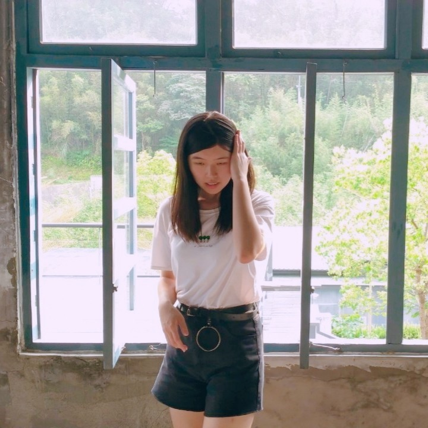
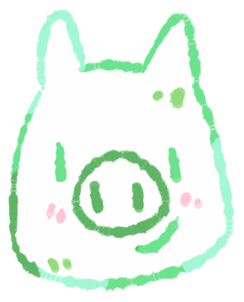
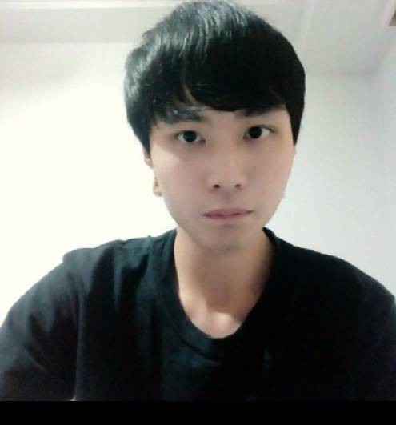

分工項目:資料整理|首頁|通識課程頁面|全網站特效|網頁調整
心得:期中多媒體製作行銷網站，我們的主題為全人教育，對於行銷自己並不是那麼在行，不過也因自己曾做過不少網站，這些經驗都輔助了我在面對期中專案時可以有如何的構思去製作，主要網頁參考了網路上的版型後做出來，再研究網頁，進而增加互動效果，讓整個網站更加活潑生動，這是我在專題中收穫很大的一部分，美感部分須要靠隊友協助，不過協調都很順利。
大家都有各自的事要忙，但對這次專題都進了很大的努力，非常感謝隊友們，有隊友會做影片與行銷，也有會繪圖及美編的隊友，大家都很給力，將成品呈現到最好!
王志翔
FB
分工項目:日日新頁面|Icon|插圖|顏色修改|整體版面設計|資料整理
心得:一進中原就讀時就有耳聞學校的全人教育做的很落實，從多元的通識課程到請專業劇團來表演、業界名師演講，各個部分都能明顯看出學校的用心，自己也參加過不少學校舉辦的活動，得到許多心得與收穫，這些資源在校內都是免費可得，完全不需要支付額外的費用，所以我們更該好好運用這些資源，去體驗並且豐富自身價值，也因此，這次選擇了全人教育題材，目的就是要讓這些資源能夠被更多的人知道並推廣出去。
再者，感謝組員們的合作幫忙，每個人互相協調，各展其才，因為有大家的努力以及付出，才能造就這次的專題!
盧怡臻
FB 
分工項目:影片|腳本|資料整理|整體版面設計
心得:這一次的多媒體的主題發想「全人教育」，是因為這是我從大一開學就一直聽張校長倡導中原的特色—全人教育。在課程中、大大小小在校園裡辦的講座、音樂會、戲劇表演，這些通識活動，讓我感受到學校用足了心去培養我們學生，不僅是課業上，還有栽培我們如何用有限的能力，去回饋社會。
總是有許多人在怨學校這裡不好、那裡不好，中原其實給了我們學生很多資源，但要如何去有效運用這些我們每學期付出的”學費“，不要白白浪費了這些費用，而是如何將這些有形的物質轉化成自身無形的能力。
董建霖
FB 
分工項目:通識活動頁面|關於我們|資料整理
心得:第一次以這種組合合作專題感覺挺新鮮的。自從分組之後才發現，每個人都有很厲害的地方，負責蒐集資料的、做網站的、設計logo的......等等，每個人都有自己分內要做的事，而自己顯得沒有特別專長的事，只能盡力的去完成自己份內的工作並從失敗中去學習，很感謝組員們的包容，你們永遠是最棒的!!!!。每個人都有各自的事情要忙，但大家總會盡力的去完成，從專題就可以看出一個人在小組活動中的細心及用心程度，可以增加許多知識，也了解到專業分工、小組討論及小組之間該如何相處的方法。我會說：「不論結果如何，在我們的心中我們就是做的最好的一組。」
黃聖育
FB 